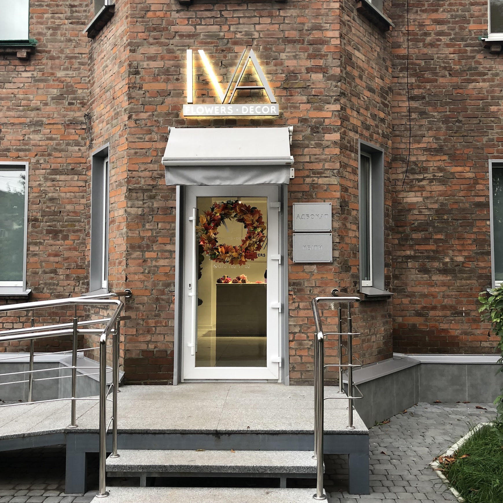
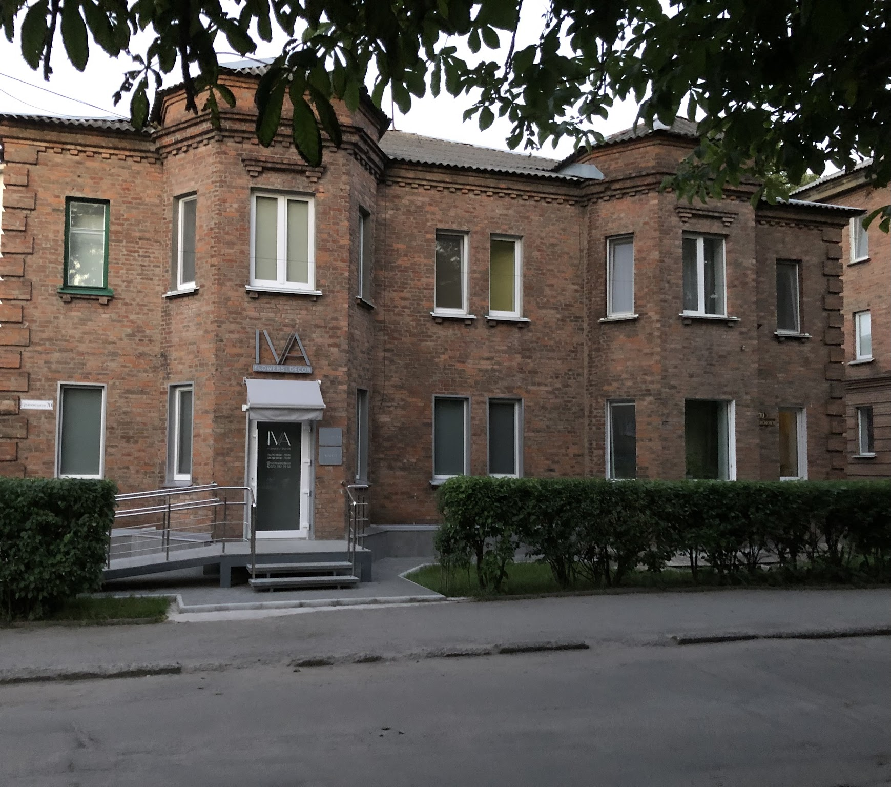

Персональна інформація
Про мене
Відомості про адвокатську діяльність, професійний підхід до надання правничої допомоги та робоче місце.
Виростко Альбін Вікторович
Адвокат, який здійснює індивідуальну адвокатську діяльність та надає правничу допомогу фізичним і юридичним особам.
Адвокатський статус
Свідоцтво про право на заняття адвокатською діяльністю № 000668, видане 05 травня 2020 року Радою адвокатів Вінницької області.
Підхід до роботи
Кожне звернення потребує окремого аналізу документів, обставин та правових ризиків. Робота будується на професійній оцінці ситуації, узгодженні правової позиції з клієнтом та належному документальному супроводі.

Інформація на сайті має загальний характер і не є індивідуальною правовою консультацією. Обсяг правничої допомоги визначається окремо з урахуванням обставин доручення.
Робоче місце
Офіс адвоката
Фотографії входу та фасаду будівлі, де розташоване робоче місце.

